曇り空の厳島神社
2020/12/18
GOTOで宮島に行きました。
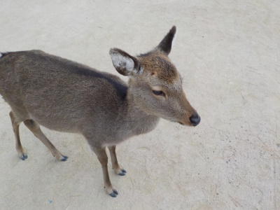
鹿があちこちにいました。
寒いのかな？みんな元気がなさそうで、動きが遅かったです。
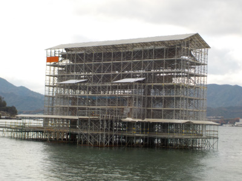
只今鳥居は工事中です。
工事中っていうのは承知の上でしたが、見れないのは残念ですね。
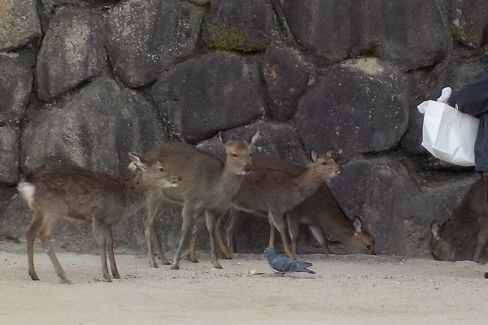
鹿のエサタイムを見ました。この時の鹿は活動的でした。
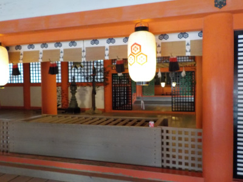
厳島神社に参拝です。
屋内なので暗いですね。なんとなく参拝する気分になれなかったので見学だけしました。
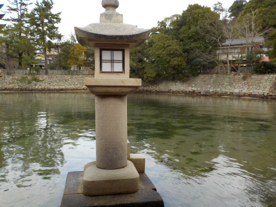
お城にありそうな景色ですね。
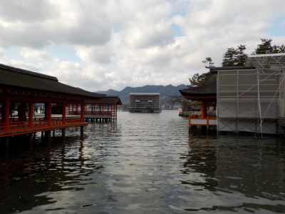
ここが写真を撮る場所ですが、工事中の為いまいちです。曇っているので全体が暗いなー。
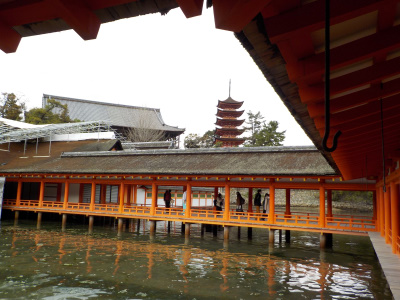
天気が良くて工事がなけれは、ここもいい景色ですね。
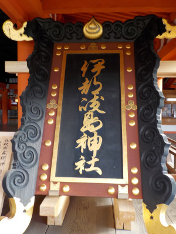
鳥居に付いてる表札？が身近に見れるようになっていました。
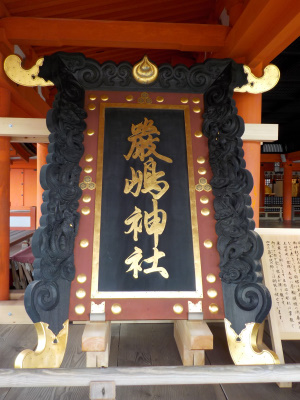
普段近くで見れないものが見れるのはいいですね。
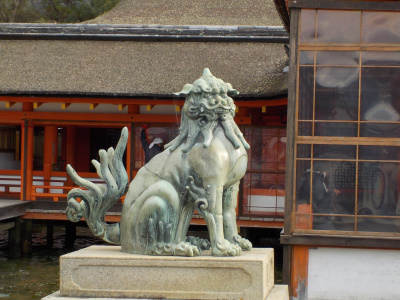
格好いい狛犬です。こっちが雌。
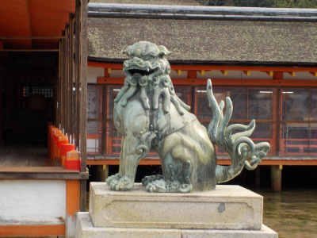
これは雄だそうです。
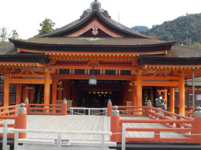
舞台は立ち入り禁止ですね。
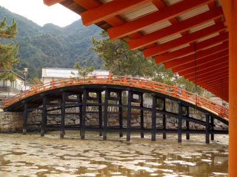
この橋も立ち入り禁止です。
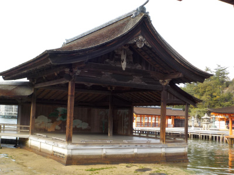
能舞台です。
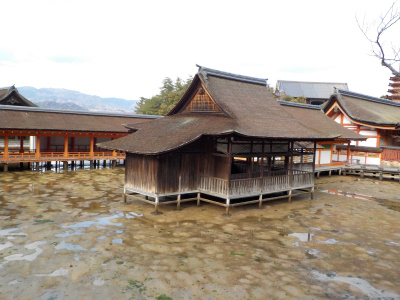
能舞台はなんで朱色じゃないんでしょうね。
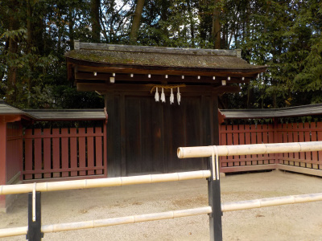
厳島神社は見るものが色々ありましたが、所要時間はあまりかかりませんでした。
もう終わっちゃったっ？て感じです。
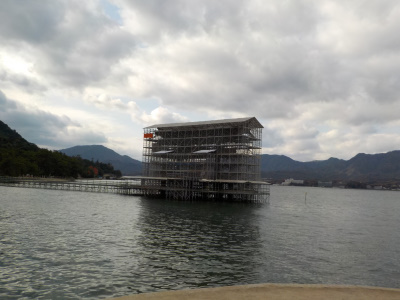
厳島神社は干潮の時に鳥居に行くのが一番面白いんだろうな。
早く工事が終わるといいですね。